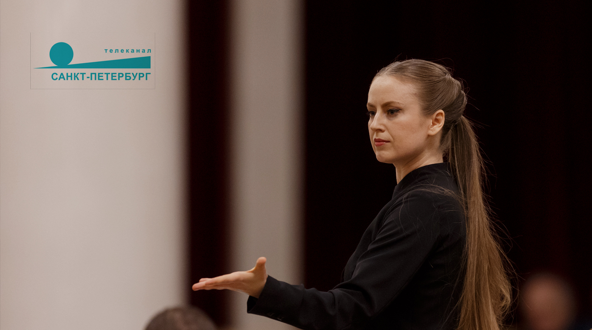

телеканал санкт-петербург
Культурная эволюция 2025
За короткое время РКСО стал заметным явлением в культурной жизни России
РКСО - Российско-китайский симфонический оркестр и хор – это коллектив, успешно представивший ряд творческих проектов на ведущих концертных площадках России, среди которых Концертный зал Мариинского театра, Большой и Малый залы Санкт-Петербургской филармонии, Государственная академическая Капелла Санкт-Петербурга, Атриум Главного штаба Эрмитажа и др.
Главная / Биография
Художественный руководитель и главный дирижёр Российско-китайского симфонического оркестра и Академического хора в Санкт-Петербурге. Дирижёр проектов в Санкт-Петербургской консерватории. Художественный руководитель и главный дирижёр Международного оркестра Харбинской консерватории.
В качестве приглашённого дирижёра сотрудничает с Санкт-Петербургской филармонией, Хабаровской филармонией, Тольяттинской филармонией, Брянской филармонией, Музыкальным театром республики Карелия, Молодежным симфоническим оркестром Санкт-Петербурга, консерваторией имени Дж. Россини в Пезаро (Италия), Национальным театром Бахрейна и др.
Является дирижером балетов Эрмитажного театра.
узнать большеГлавная / Пресса
телеканал санкт-петербург
За короткое время РКСО стал заметным явлением в культурной жизни России
первый канал
Уникальный симфонический оркестр и его дирижёры. Что приподнесёт коллектив ко Дню Рождения города?
программа алисы дудаевой
Википедия утверждает, что таких женщин всего 30 на весь мир! Виктория - одна из них
первый канал. вести санкт-петербург
Виктория Добровольская и Тунжо Чжэн об особенностях работы с симфоническим оркестром и академическим хором
российская газета
Музыканты простились с Юрием Темиркановым концертом в его родном зале в день смерти Маэстро
cgtn
Глобальная телевизионная сеть Китая о гастролях Российско-китайского симфонического оркестра
classical music news
Россиянка Виктория Добровольская стала первой женщиной-дирижером в истории Бахрейна
новости от артемия лебедева
Концерт в Национальном театре в присутствовии членов королевской семьи, министра культуры Бахрейна, международного посольства
телеканал санкт-петербург
Дирижёры Виктория Добровольская и Тунжо Чжэн делятся эмоциями от работы над уникальным проектом
Главная / Медиа
.jpg)
.JPG)
.JPG)
.jpg)
.jpg)
.jpg)
.jpg)
.jpg)
.jpg)
.jpg)
.jpg)
.JPG)
.jpg)
.JPG)
.JPG)
.JPG)